Art study: what if the cards came from another tradition?
A canvas exercise, nothing in the game changes. Same frame, same type, same sizes. Each section drops a different public-domain tradition into the window and then asks what it would drag along with it: palette, frame, chrome, tone, licensing.
Current
Codex Manesse
- Palette Lapis, vermilion, gold, parchment. Flat and saturated, no shading.
- Frame The checker band is lifted from the manuscript borders, so frame and art agree.
- At 56px Figures stay legible because the forms are big and outlined.
- Tone Light, decorative, a little comic. Matches a bluffing game.
The reference. Everything below is measured against this.
1
Guard
2
Priest
6
King
8
Princess
1
2
6
8
Option A
Hofämterspiel
- Palette Rust red, ochre, olive green, parchment. Warmer and duller than Manesse; no lapis.
- Frame The checker band becomes a plain two-colour band; gold rule stays.
- At 56px Thinner lines and busier backgrounds, slightly less legible than Manesse.
- Tone Playful and domestic. The roles map almost one to one onto Love Letter's cast.
Closest cousin. Same century, same spirit, with a better story (it is a card game). Costs a licensing detour.
Chrome unchangedPlay the Guard
1
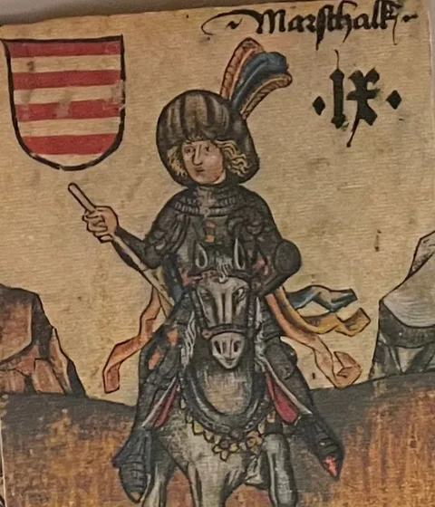
Guard
4
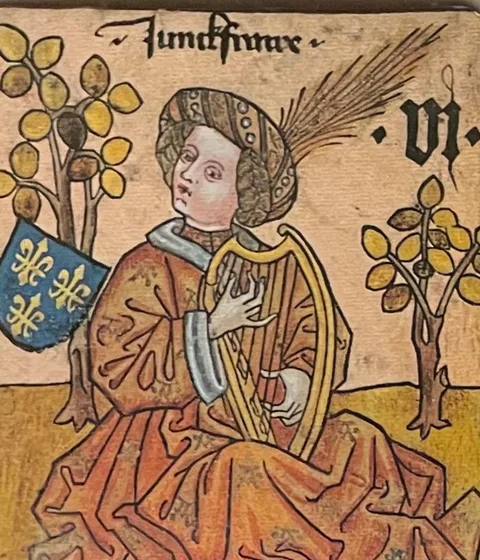
Handmaid
8
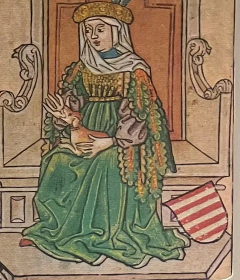
Princess
1
4
8
Option B
Tarot de Marseille
- Palette Primary and loud. The frame would have to go black-line to not fight it; lapis and gold disappear.
- Frame Single heavy rule, no checker, square window. It becomes a card, not a miniature.
- At 56px Best of the set: made to be read in a hand.
- Tone Occult, esoteric. Reads as "fortune telling" before it reads as "court intrigue".
Strongest graphically, wrong story. Also drags the whole interface toward black and primary colours.
Chrome would go black-linePlay the Guard
1
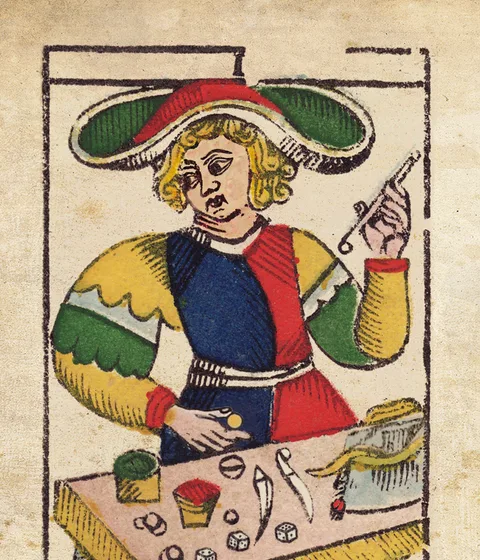
Guard
2
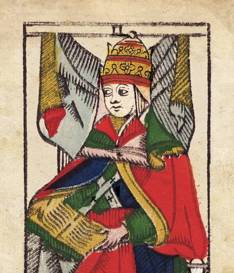
Priest
6
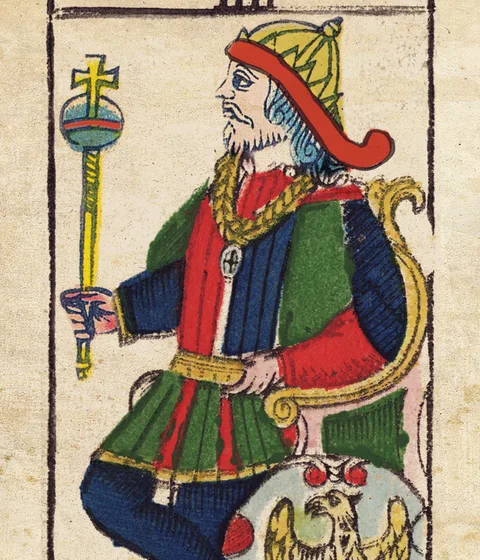
King
8
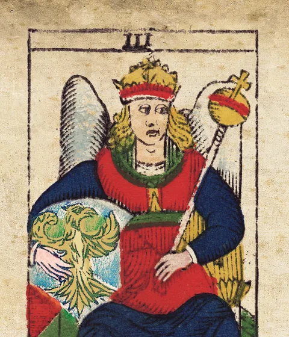
Princess
1
2
6
8
Option C
Incunable woodcut
- Palette None. One ink. Rank numerals could take a single red, as rubrication did.
- Frame Hairline black rule, no gold, no band. The card becomes a printed page.
- At 56px Weak: crosshatching turns to grey mush at thumbnail size.
- Tone Serious, scholarly, a bit grim. Beautiful on a desktop, dull on a phone.
Most "designed" and most austere. Loses the thing you liked first, colour.
Chrome unchangedPlay the Guard
1
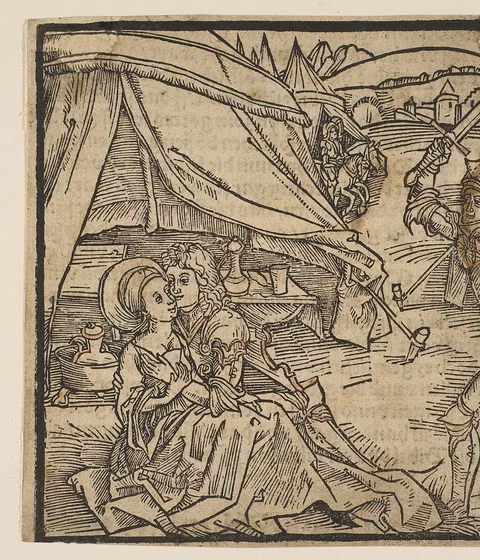
Guard
2
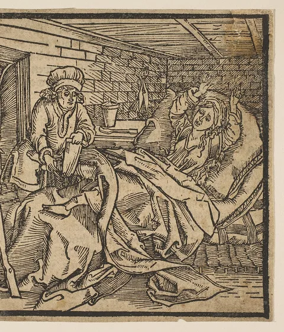
Priest
8
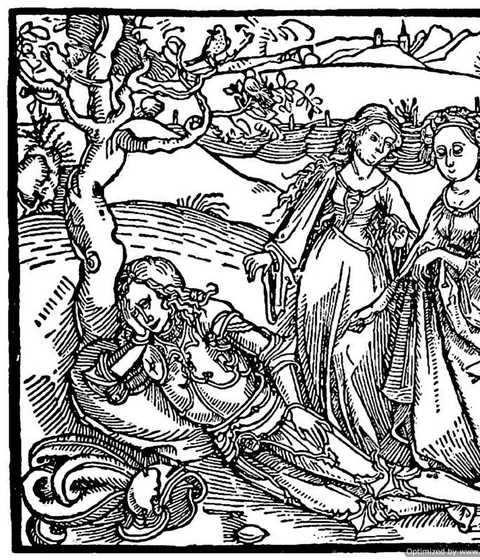
Princess
1
2
8
Option D
Ukiyo-e
- Palette Indigo, vermilion, bone. The frame drops gold and the checker for two thin vermilion rules.
- Frame Could lose the frame entirely and bleed the print to the edge; the rank would need a cartouche.
- At 56px Good: big shapes and strong contrast.
- Tone Theatrical, elegant. But the cast is European court roles; the names and the pictures would argue.
Gorgeous and incoherent with the cards' names. Would want a retheme, which is a different project.
Chrome shifts to indigoPlay the Guard
1
Guard
2
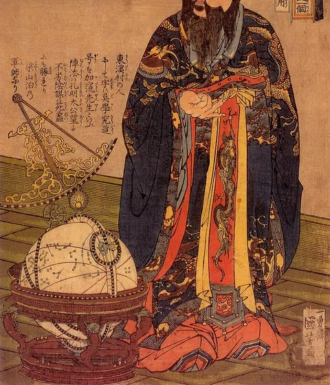
Priest
8
Princess
1
2
8
Option E
Golden-age illustration
- Palette Olive, ochre, dusty rose, a lot of mid-tones. The frame goes olive and gold with a softer, arched window.
- Frame Art Nouveau wants curves; the arched top is the minimum. The checker band is gone.
- At 56px Poor. These are full-page scenes with small figures; nothing survives a thumbnail.
- Tone Storybook, sweet. Nearest to "fairy-tale princess", furthest from "bluffing".
Pretty on the home page, useless in a hand. The scenes don't crop to single figures.
Chrome shifts to olivePlay the Guard
1
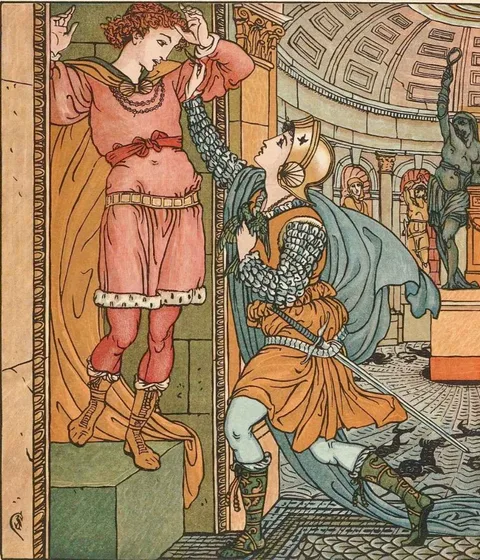
Guard
6
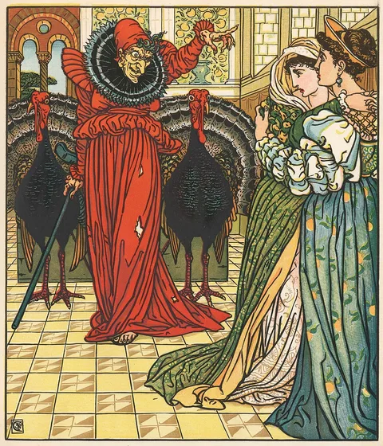
King
8
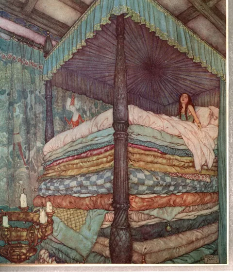
Princess
1
6
8
Summary
| Tradition | Fits the story | Legible at 56px | Keeps the chrome | Licensing | One line |
|---|---|---|---|---|---|
| Codex Manesse (current) | Yes | Yes | Yes | Public domain | The subject of the manuscript is the subject of the game. |
| Hofämterspiel | Yes | Mostly | Yes | Photos CC BY-SA | The one real alternative. Could also mix: a Manesse deck with a Hofämterspiel back. |
| Tarot de Marseille | No | Yes | No | Photos CC BY-SA | Best card graphics, wrong genre. |
| Incunable woodcut | Partly | No | Yes | CC0 | Austere and monochrome; loses the colour. |
| Ukiyo-e | No | Yes | No | Public domain | Needs a retheme of names and roles. |
| Golden-age illustration | Partly | No | No | Public domain | Scenes, not figures; dies at thumbnail size. |
What the exercise shows: the art choice is really a frame and chrome choice. Manesse and Hofämterspiel sit inside the current system. Tarot, ukiyo-e and golden-age each pull the frame, the accent colour and then the whole interface after them. Changing the pictures means redoing piece two.